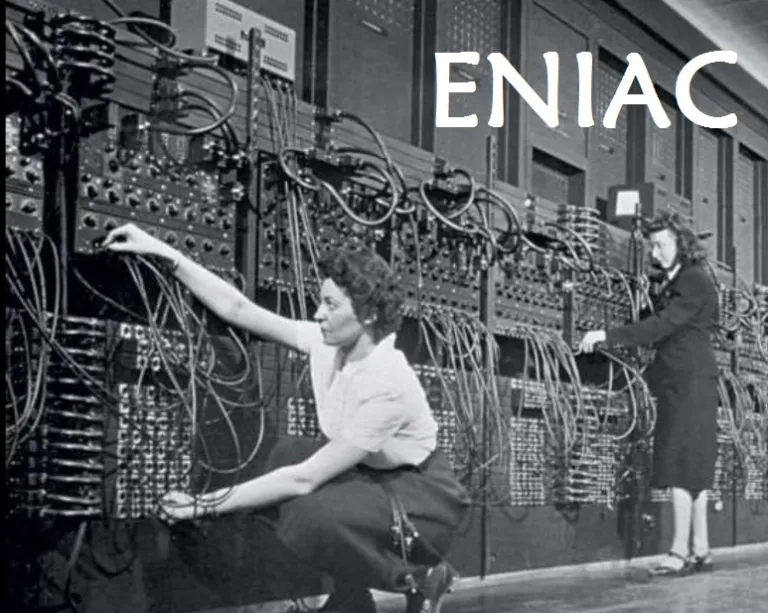

1945: O ENIAC transforma teoria em máquina real
Este dispositivo foi o primeiro computador digital e eletrônico programável do mundo, desenvolvido durante a Segunda Guerra Mundial por John Eckert e John Mauchly.


SURGIMENTO DA ENIAC
Nos Estados Unidos, em meio ao esforço de guerra, os engenheiros John Mauchly e J. Presper Eckert , da Universidade da Pensilvânia, construíram o ENIAC (Electronic Numerical Integrator and Computer)
considerado um dos primeiros computadores eletrônicos de uso geral do mundo.
Diferente da máquina de Babbage, que era mecânica e dependia de engrenagens e manivelas girando fisicamente, o ENIAC
usava cerca de 18 mil válvulas eletrônicas, componentes de vidro parecidos com lâmpadas que processavam informação por meio de sinais elétricos, muito mais rápidos que qualquer peça mecânica.
O tamanho era impressionante para os padrões atuais: a máquina ocupava uma sala inteira, pesava cerca de 30 toneladas e consumia tanta eletricidade que, segundo relatos da época, as luzes da
vizinhança chegavam a oscilar quando ele era ligado.

Sua função original era calcular tabelas de artilharia para o exército americano, prever a trajetória de projéteis considerando vento, distância e outras variáveis, um cálculo que um matemático humano levava
dias para fazer e o ENIAC fazia em segundos, mas ele podia ser reprogramado para outros tipos de cálculo também.
COMO O ENIAC ERA PROGRAMADO
diferente de digitar um código como fazemos hoje, programar o ENIAC significava literalmente mudar milhares de fios de lugar e ajustar painéis de interruptores manualmente, um processo que podia levar dias
inteiros só para preparar a máquina para um novo cálculo.
E quem fazia esse trabalho delicado, na maior parte, eram mulheres, como:
hoje reconhecidas como pioneiras da programação, seguindo, sem saber na época, os passos abertos por Ada Lovelace um século antes.